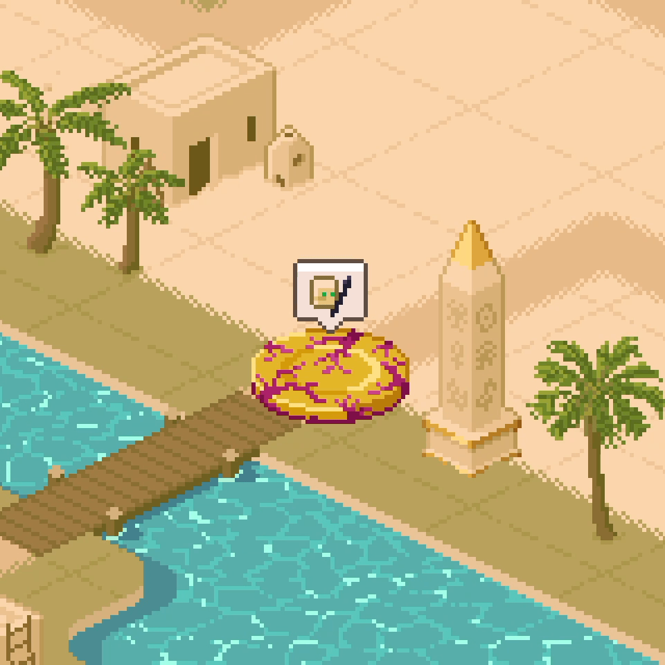
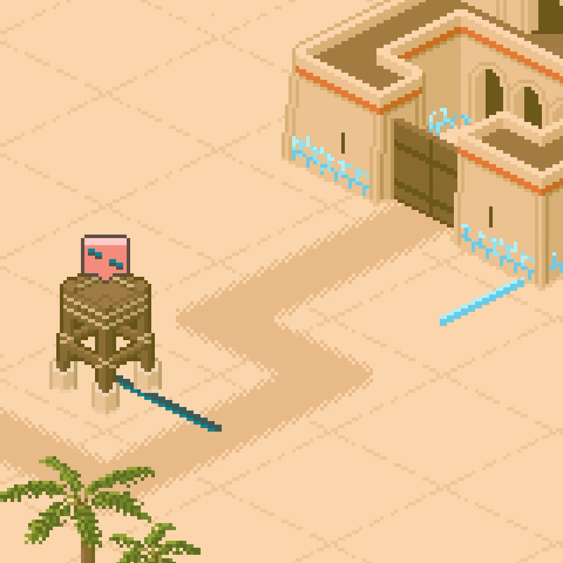
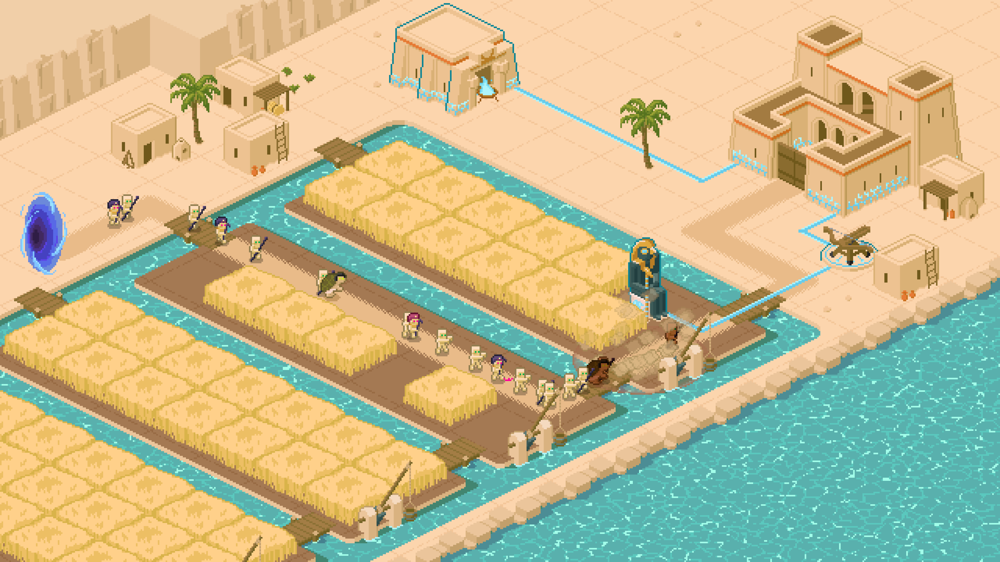

Published on 22.02.2026
Alpha 4.2: Improving the Flow
While our next major content update is still in the works, we wanted to release something that improves your overall experience right now. Alpha 4.2 focuses less on new gameplay systems and more on making the game more intuitive and clearer — especially for new players — while also adding long-requested features for our veterans.
Below you’ll find the most important additions, but feel free to also check out the more detailed release notes linked at the bottom.
⌨️ Introducing Keybinds
Some of you have requested this for a long time, so we thought it’s finally time to introduce more keyboard controls.
You’re no longer limited to just pausing the game. Alpha 4.2 introduces expanded keyboard controls to help you play faster:
- Adjust the game speed with 1, 2 or 3
- Toggle Power Line placement and Sell mode with Q and W
- Select towers in the shop using A, S, D, F, G
- Upgrade and sell towers with E and R
Prefer a different setup? No problem. All keybinds are fully customizable in the settings menu.
🎧 Original Soundtrack
Thanks to our music producer, who joined the team last year, Koshari Defense now features its very first original soundtrack! The soundtrack currently plays during all levels as well as in the level selection screen — with more tracks planned for future updates.
We can’t wait to hear what you think.
⬆️ Lots of Other Improvements
Alpha 4.2 also introduces a variety of smaller improvements designed to make the game clearer and more enjoyable to play.
We’ve added some visual feedback when player action is required. For example:
- An animated speech bubble now appears if a tower is not connected to the power line network, or if you didn’t complete a level yet.
- We also noticed that many players overlooked the mission log in the upper-right corner, so we added a subtle animation whenever there’s a new objective related to tutorial progression.
Tooltips have also been improved to better explain the tower targeting options, as well as many other buttons in the shop and the level selection.


🏝️ Rework of “Storming the Fields”
The small level set in the wheat fields beside a large river originally served as a tutorial for tower upgrades. However, we decided to integrate that explanation into the first level instead, which gave us the opportunity to redesign the level with a new purpose.
The reworked version now focuses on introducing the Horus Statue and the Summoner Enemy more clearly. It features completely new enemy waves and allows for a few new strategies.
With a threat level of 2/4, it should be manageable within a few attempts — though it wouldn’t be the first time we underestimated a level’s difficulty. As always, we’re looking forward to your feedback!

That’s All for Now!
If you’d like to learn more about Alpha 4.2, check out the full release notes or try the updated demo on Steam or itch.io.
And stay tuned — our next major update is planned for this summer.
Thank you for supporting Koshari Defense 🧡 Until next time!